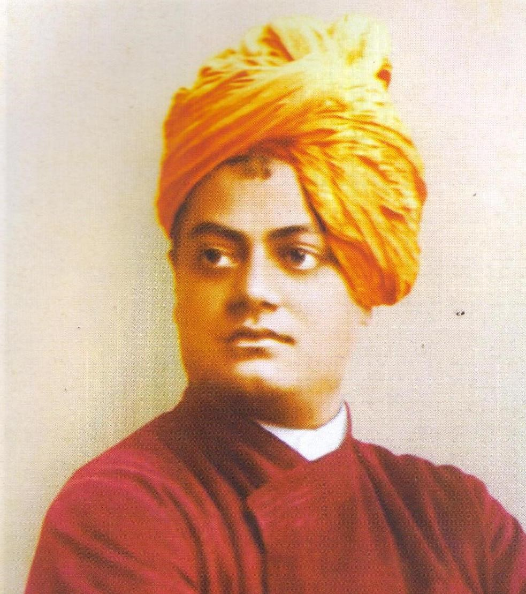
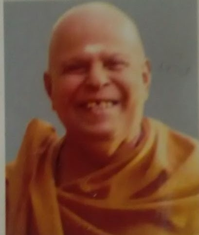
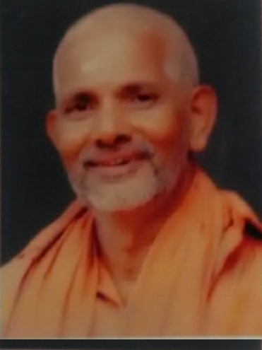

Our Guiding Lights

Swami Vivekananda
The Kendram is inspired by the rousing call of Swami Vivekananda to serve every man as God himself---‘Nara’ as’ Narayana’.We are driven by his vision of India rising from the villages and forests, from the most remote and most backward sections of our great motherland. We therefore strive, in every step, to serve each person as God, to remove agony, reduce suffering and provide comfort. Liberating people from the clutches of ill health and poverty and leading them to better lives through education, empowerment and social regeneration has been the mission of the Kendram all these years.

Swami Mridananda
The guidance of Swami Mridananda is instrumental in establishment of the Kendram. After the Samadhi of Swamiji, the Kendram instituted an award in his name for spiritual seva leaders in the state. Till now 10 stalwarts received it. In 2016 the Kendram celebrated his birth centenary and organized year long programs in the state. Further the first Hindu Mahasammelanam at Aarattupuzha, the deva sangama bhumi, was organized and it was well receicved by the people and it inspired us to organize the Hindu Mahasammelanam in every year.

Swami Purushotamananda
Swami Purushotamananda established the kendram with the help of like minded people. He was one of the founding members of the Seva kendram.Our Mission
We therefore strive, in every step, to serve each person as God, to remove agony, reduce suffering and provide comfort.
Our Activities
We are involved in various social welfare activities in the area and some of them are :